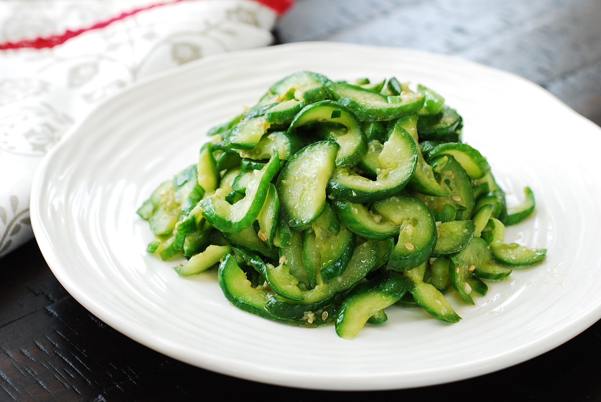

Stir-fried Cucumber Salad

Description
This is a stir-fried cucumber side dish that is quick and easy to make.
Goes very well with rice and/or any meats.
Ingredients
- 1 pound cucumbers
- 1 tbsp kosher salt
- 1 tbsp oil for stir-frying
- 1 tsp minced garlic
- 1 tsp sesame oil
- 1/2 tsp sesame seeds
Steps
- Cut the cucumbers in half lengthwise, and then thinly slice crosswise slightly diagonally. If the cucumbers are thin, you can simply cut into thin rounds.
- Lightly salt the cucumber slices with salt to coat evenly. Let sit for about 10 minutes.
- Tightly squeeze out the water content from the salted cucumber slices.
- Heat a pan over high heat. Add 1 tablespoon of oil to the pan. Quickly stir in the garlic. Add the cucumbers. Stir-fry for a minute until the cucumbers are slightly cooked. Do not overcook. Turn off the heat. Toss well with the sesame oil, and sesame seeds.